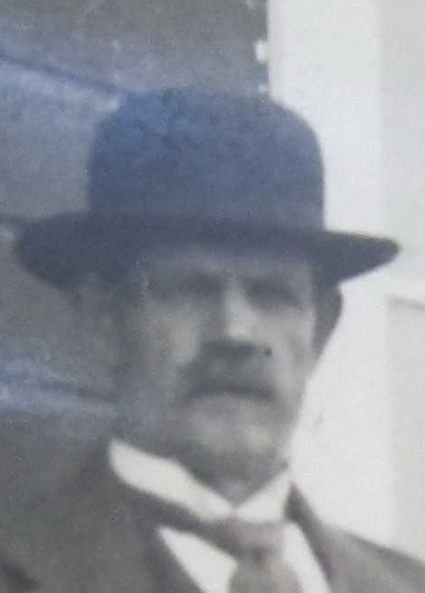

Född 11 maj 1929 i Tjällmo (E) 1 .
Död 20 nov 1997 i Finspång Hällestad 1:1, Skogalund, Hällestad (E) 2 .
Född 6 apr 1896 i Hycklinge Storgård, Hycklinge, Fornåsa (E) 3 .
Död 24 okt 1970 i Finspång Ås 1:33, Hällestad (E) 2 .
Född 18 sep 1908 i Klarsjökärret, Drothem (E) 4 .
Död 1 maj 1974 i Fridhem, Ås, Hällestad (E) 2 .

MF Anton Albin Karlsson Petersson.Född 27 jun 1874 i Nystugan, Kalerum, Gryt (E) 5 .
Död 29 aug 1933 i Albinsro, Stora Torsmossen, Skälv, Norrköpings Borg (E) 2 .
MFF Karl Peter Karlsson.

Född 27 feb 1837 i Käggla/Kägglö, Tryserum (E) 6 .
Död 23 feb 1904 i Hästhagen, Spolstad, Gårdeby (E) 7 .
MFM Anna Sofia Svensdotter.
Född 21 apr 1848 i Björklund, Rullerum, Ringarum (E) 8 .
Död 8 jul 1932 i Hagsätter, Halleby, Skärkind (E) 9 .
Född 14 okt 1877 i Klarsjökärret, Drothem (E) 10 .
Död 18 maj 1953 i Västra S:t Persgatan 75, Gård 4, Kv Godvän, Berget, Norrköping, Norrköpings Sankt Olai (E) 2 .
 Född
7 maj 1946
i Risinge (E)
Född
7 maj 1946
i Risinge (E)